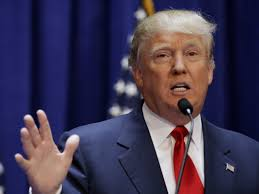

Cuando la gobernadora de Carolina del Sur, Nikki Haley, dio un toque de atención a las “voces enfadadas” de su Partido Republicano, a las que pidió “bajar un poco el volumen” retórico, el establishment conservador y su base electoral más moderada dieron un suspiro de alivio. Al fin una voz fuerte del partido que ansía recuperar la Casa Blanca se atrevía a pedir algo de moderación a la decena de candidatos presidenciales que han hecho de la ira su hoja de ruta electoral.
El alivio duró poco. Dos días después de las palabras de Haley, la republicana conciliadora elegida para dar la réplica al último discurso sobre el estado de la Unión del presidente Barack Obama, los aspirantes republicanos volvían a blandir el discurso catastrofista, iracundo y ultraconservador —menos gobierno, oposición frontal al aborto, deportación de inmigrantes indocumentados, portazo a los refugiados, mano dura en política exterior— en un nuevo debate electoral. Y una semana más tarde, Sarah Palin, el fantasma radical del pasado reciente republicano, resurgía para apoyar públicamente al candidato en cabeza, Donald Trump.
“El Partido Republicano se ha convertido en un insurgente atípico en la política estadounidense. Es ideológicamente extremo, desprecia las normas sociales y económicas heredadas, desdeña el compromiso, permanece inmutable frente a conceptos demostrados por hechos y la ciencia y desdeña la legitimidad de la oposición política”. La descripción corresponde a los politólogos Thomas E. Mann y Norman J. Ornstein. Procede de su libro ‘Es peor incluso de lo que parece’, en el que alertan del giro extremista que estaba dando la formación conservadora, alejándose de las convenciones del juego político y apostando por la paralización partidista. La obra fue escrita en 2012.
